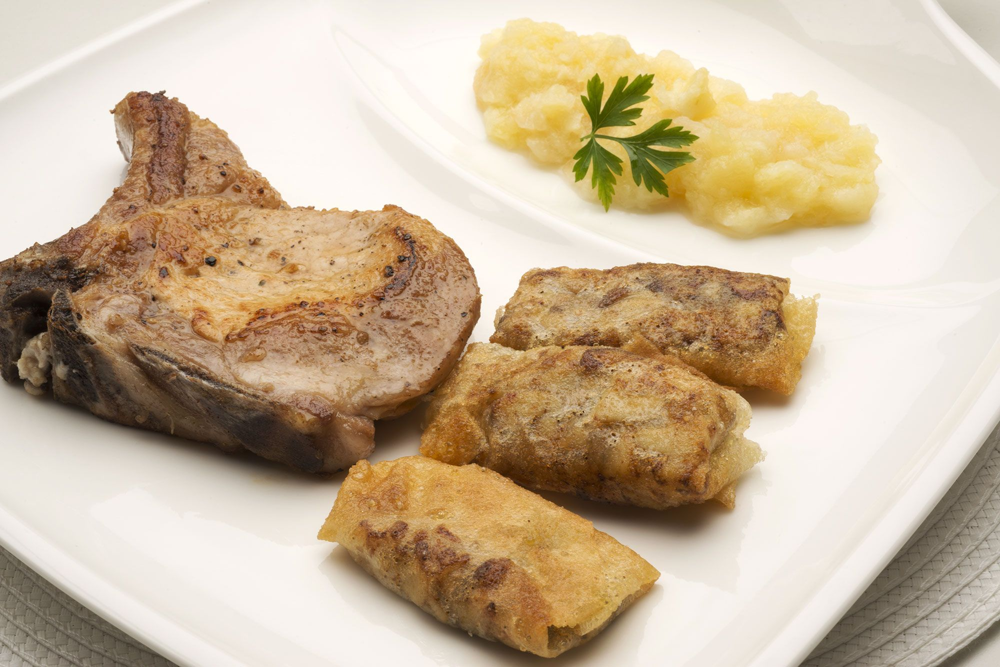
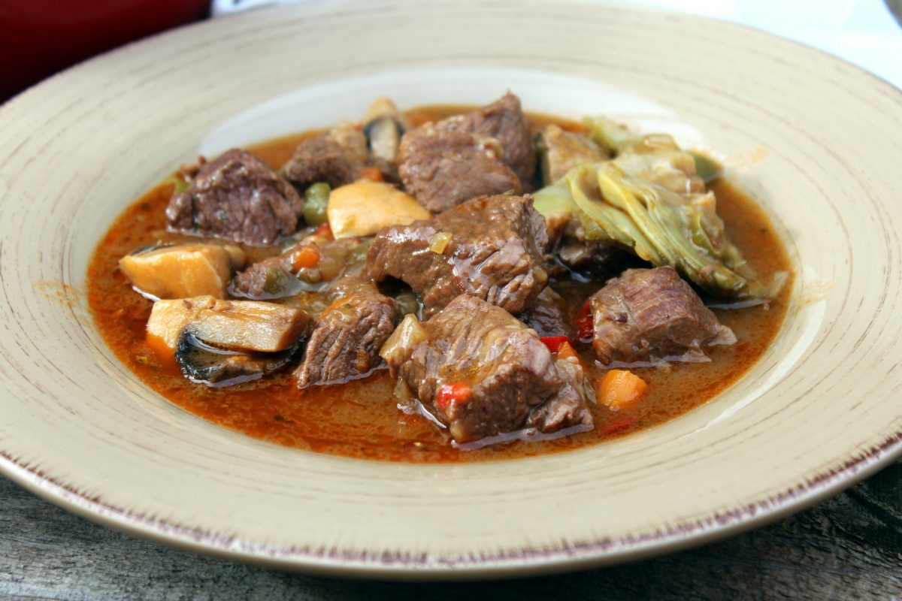
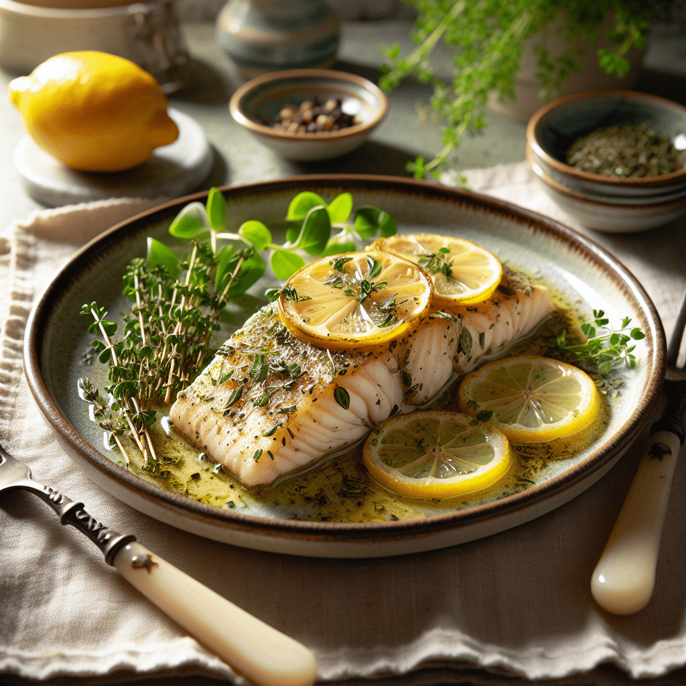

Chuletas de cerdo con puré de manzana y bricks de boletus
Un plato que combina el sabor intenso de las chuletas de cerdo con la dulzura del puré de manzana y el toque crujiente de unos delicados bricks rellenos de boletus. Una propuesta equilibrada y elegante que une tradición y modernidad en cada bocado.

Ingredientes (4 personas):
Chuletas de cerdo (4)
Hojas de pasta brick (3)
Boletus (200 g)
Cebolleta (1)
Dientes de ajo (2)
Manzanas (4)
Mostaza antigua (1)
Aceite de oliva virgen extra
Sal
Pimienta
Perejil
Rabo de ternera con alcachofas
Un guiso tradicional lleno de sabor, donde el rabo de ternera se cocina lentamente en vino tinto junto a verduras y especias hasta quedar tierno y jugoso. Las alcachofas aportan un toque fresco y equilibrado que realza la intensidad del estofado, creando un plato reconfortante y lleno de carácter.

Ingredientes (6 personas):
Rabo de toro (600 g)
Alcachofas (6)
Cebollas (2)
Zanahorias (2)
Manzana (1)
Dientes de ajo (3)
Vino tinto (500 ml)
Harina
Harina de maíz refinada (1 cucharada)
Aceite de oliva virgen extra
Hoja de laurel (1)
Perejil
Pimienta negra en grano
Pimienta
Sal
Elaboración
Salpimenta los trozos de rabo, pásalos por harina y fríelos en una sartén con aceite.
Pela las cebollas, las zanahorias, la manzana y los dientes de ajo y pícalos finamente. Ponlos a pochar en la olla rápida hasta que doren. Añade la hoja de laurel y unos granos de pimienta. Sazona.
Vierte el vino en la olla y dale un hervor. Vierte la misma cantidad de agua (500 ml) e introduce los trozos de rabo. Pon a punto de sal. Coloca la tapa y cuece todo durante 30 minutos.
Abre la olla, desgrasa y liga la salsa en caliente añadiendo una cucharada de harina de maíz diluida en agua fría. Desmiga el rabo y espolvoréalo con un poco de perejil picado.
Pela las alcachofas retirándoles las hojas externas (las duras) y la parte superior. Corta cada una en 6 trozos y fríelas en una sartén con un chorrito de aceite. Sazónalas.
Sirve el rabo y acompáñlo con las alcachofas fruitas.
Filete de pescado al horno con limón y hierbas
Un plato ligero y nutritivo, donde el pescado se hornea suavemente con aceite de oliva, limón y hierbas frescas. Perfecto para una comida equilibrada y fácil de preparar en menos de 30 minutos.

Ingredientes:
Filetes de pescado blanco: merluza, lenguado o bacalao (2)
Limones (1)
Aceite de oliva virgen extra (2 cucharadas)
Diente de ajo picado (1)
Tomillo fresco (1 cucharadita)
Perejil picado (1 cucharadita)
Sal y pimienta al gusto
“La sencillez realza los sabores del mar; basta un poco de limón y paciencia para dejar que el pescado hable por sí mismo.” — Chef Elena Rivas
Lubina al horno con verduras y limón
Un plato saludable y lleno de sabor, donde la lubina se hornea suavemente con un toque de limón y una mezcla de verduras frescas. Ideal para disfrutar de una comida ligera, equilibrada y mediterránea.